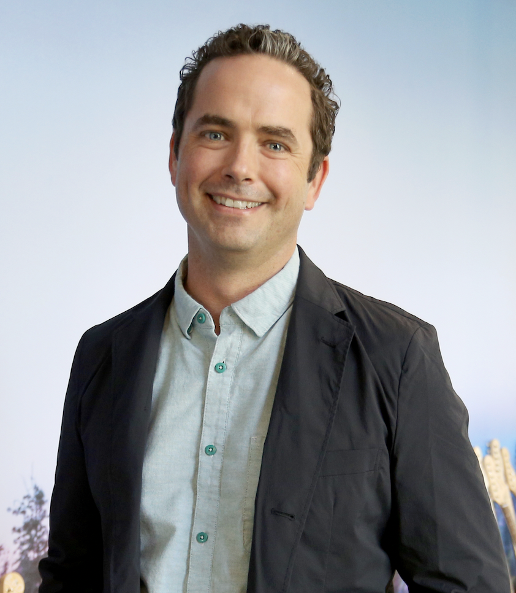

Twenty years of building the infrastructure behind other people's best work.

Where this started
Before the executive titles, I was a creator - a sound editor, music producer and engineer who spent thousands of hours on the floor at Skywalker Sound and Yahoo Music. That work taught me what pressure, craft, and quality actually feel like from inside a session, not from an org chart above it.
I've since built studios and innovation labs for Verizon, navigated the MBA-level complexities of enterprise business operations, and co-founded two startups in live entertainment and regulated housing. Throughout this arc, I've managed the full spectrum of talent - creatives, engineers, finance, and business professionals - and learned how to build resilient organizations from the ground up.
My leadership approach is defined by two principles: I balance a rigorous systems-thinking framework with a human instinct for the room. I've learned that "structure" isn't bureaucracy - it removes the friction that kills creative momentum. When you build the right systems, you don't box in creativity; you unlock it, ensuring teams have the roadmap they need while preserving their flexibility and culture.
Today, we are moving through a period of profound change driven by AI. I believe these shifts bring both deep risks and transformative opportunities, and that our humanity - our ability to listen, to build trust, and to foster true collaboration - is exactly what will guide us safely through it.
Structure sets you free
I've seen too many organizations lose creative momentum to the absence of structure — no agreed tools, no clear process, no consensus on how decisions get made. Structure isn't bureaucracy. It's what removes the friction that kills good work before it starts.
The same instinct, twice
Built inside the enterprise
Yahoo, Verizon Media, RYOT — 300+ person teams, multi-site operations, post-acquisition integration at scale.
Built from zero
Hatch Escapes, Cassette Systems — founder-built infrastructure in unfamiliar, regulated, or physical domains.
Where the instinct is pointed now: AI safety and governance
See more